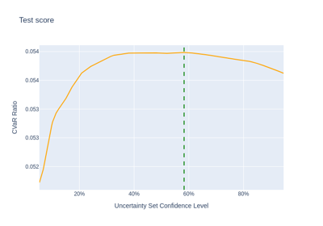

Examples#
We recommend starting with Maximum Sharpe Ratio or Minimum CVaR before moving to more advanced examples.
Mean-Risk#
Examples using the MeanRisk optimization.


L1 and L2 Regularization

Uncertainty Set


Risk Budgeting#
Examples concerning the RiskBudgeting optimization.
Risk Parity - Variance

Risk Parity - Covariance shrinkage
Risk Parity - Covariance shrinkage
Maximum Diversification#
Examples concerning the MaximumDiversification optimization.

Distributionally Robust CVaR#
Examples concerning the DistributionallyRobustCVaR optimization.

Hierarchical Clustering and NCO#
Examples concerning hierarchical clustering based optimizations.


Ensemble Optimizations#
Examples concerning ensemble optimizations.

Pre-selection#
Examples of using pre-selection transformers with Pipelines.


Data Preparation#
Examples about data preparation.